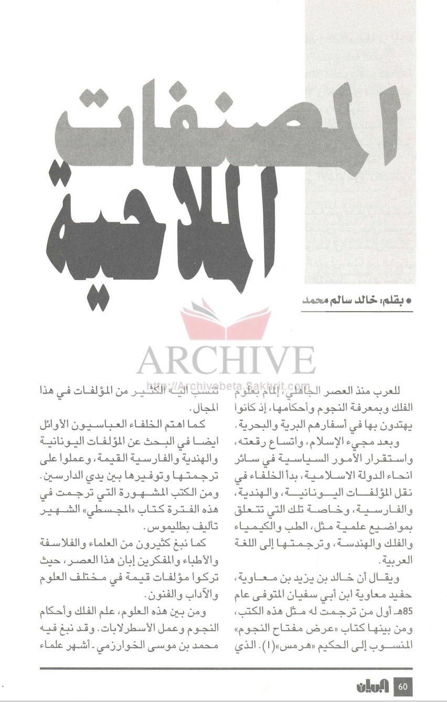
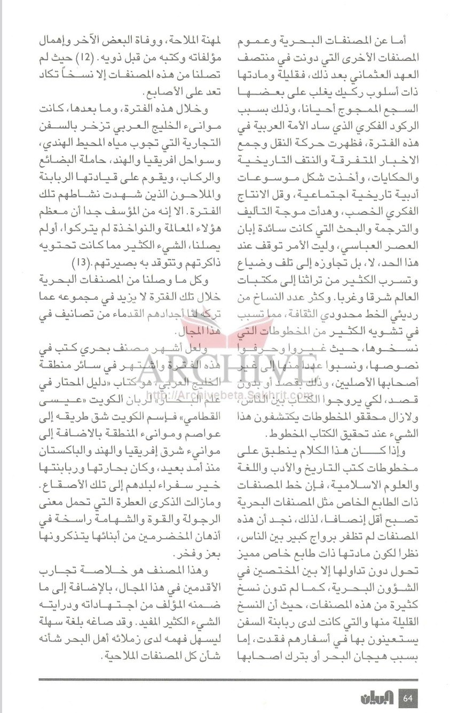
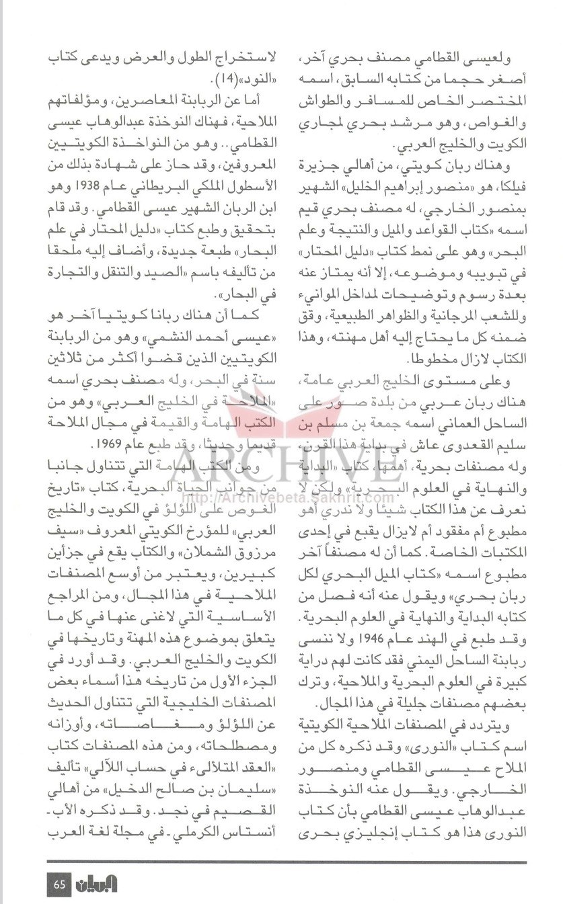
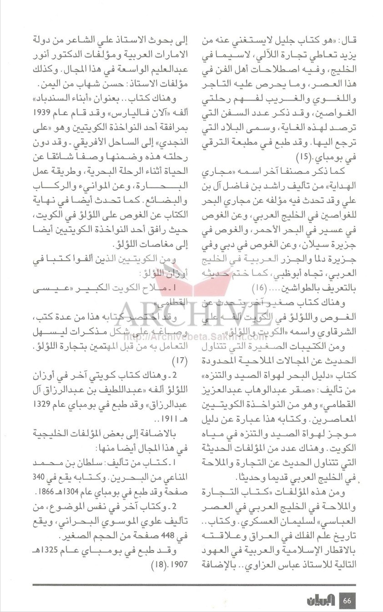

After 1996 (the article calls a 1996 book recent) · Magazine article by Khalid Salem Mohammed, Al-Bayan, pages 60 and 64 to 67
Al-Musannafat Al-Milahiya: Eissa, Abdulwahab and Sager Al-Qatami among the authors of the sea
What it is
A survey of Arab navigational writing from the early Islamic centuries to the present. Page 64 calls Dalil Al-Muhtar fi Ilm Al-Bihar by the Kuwaiti captain Eissa Al-Qatami perhaps the most famous sea book written and known across the Arabian Gulf, saying that Kuwait made its way through him to the ports of East Africa, India and Pakistan. Page 65 adds his smaller work, Al-Mukhtasar Al-Khas lil-Musafir wal-Tawwash wal-Ghawwas, a guide to the waters of Kuwait and the Arabian Gulf, and records that Nakhuda Abdulwahab Eissa Al-Qatami, a well known Kuwaiti nakhuda, earned a certificate from the British Royal Navy in 1938, and that he edited and reprinted Dalil Al-Muhtar with his own appendix, Al-Sayd wal-Tanaqqul wal-Tijara fil-Bihar. Page 66 lists «the great Kuwaiti navigator Eissa Al-Qatami» first among the Kuwaitis who wrote on pearl weights, and names Sager Abdulwahab Abdulaziz Al-Qatami, «one of the contemporary Kuwaiti nakhudas», as the author of Dalil Al-Bahr li-Huwat Al-Sayd wal-Tanazzuh, a short guide to fishing and boating in Kuwaiti waters. Page 67 gives the footnotes, including Dalil Al-Muhtar fi Ilm Al-Bihar, Eissa Al-Qatami, page 189.
Why it matters
Places three men of the family among the writers of Arab sea literature: Eissa Abdulwahab, his son Abdulwahab, and Sager Abdulwahab Abdulaziz.
Page copies





Sources
Khalid Salem Mohammed, «Al-Musannafat Al-Milahiya», Al-Bayan, pages 60 and 64 to 67 (archive.sakhrit.co)
How this text was made: Pages from the Sakhrit magazine archive. Pages 61 to 63 do not mention the family and are not included. The issue date is not shown on these pages.
Open in the interactive site